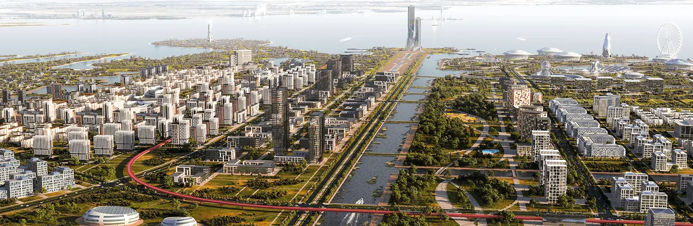
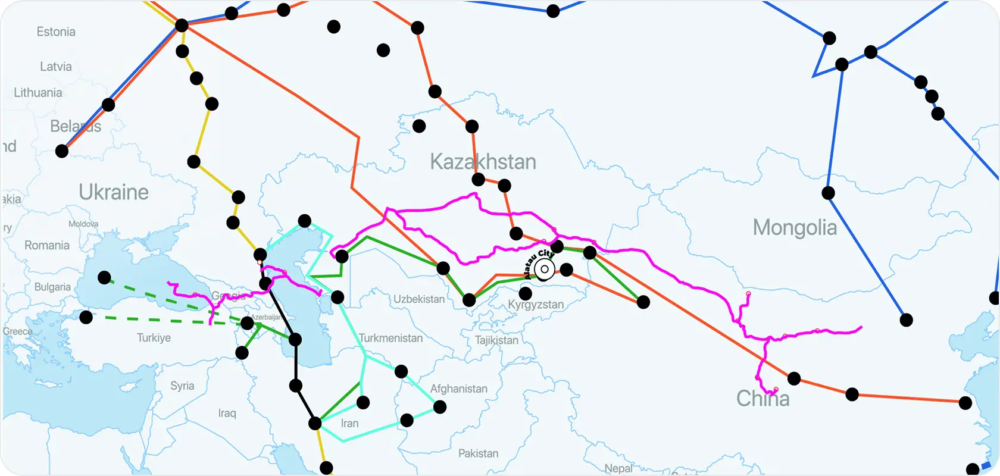
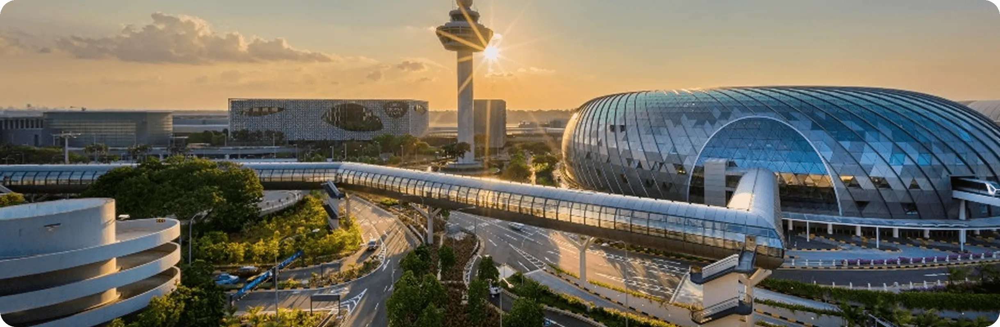

Город опережающего развития
43°12′N · 77°03′E · KZ
Новый город между Алматы и Конаевом. Мастер-план 2024 – 2050.
88 000 га
1,87 млн жителей
4 района
СЭЗ · 0% налогов
Листайте ↓
01
О городе
Alatau — город опережающего развития. Новая точка на карте Казахстана, между Алматы и Конаевом.
Не расширение мегаполиса. Отдельный линейный город на 88 000 гектаров, спроектированный с нуля - как единая экономическая зона на перекрёстке Европы и Китая.
02
Масштаб

—
Центральная водно-зелёная ось города. Рендер мастер-плана.
03
Локация
На перекрёстке Евразии
Между Алматы и Конаевом, у границы с Китаем. Точка сборки транспортных коридоров Европа - Западный Китай: рельс, магистрали, международный аэропорт.

04
Четыре района
01
Зелёный
Туризм · рекреацияКурорт у Капшагая. Парк уровня Disney, трасса Formula 1, ипподром.
02
Растущий
Индустрия · логистикаПроизводство, склады и международный аэропорт. Ворота грузопотока к Китаю.
03
Золотой
Наука · образование · медицинаУниверситеты и клиники. Кампусы на 40 000 студентов.
04
Ворота
Финансы · бизнесОфисы, банки и отели у въезда со стороны Алматы. Деловое лицо города.
05
Этапы
-
2024
Основание
Указ о создании города. Старт разработки мастер-плана и особой экономической зоны.
-
2030
Первая очередь
Базовая инфраструктура, аэропорт, первые районы и резиденты СЭЗ.
-
2050
Полный город
1,87 млн жителей, 4 района, зрелая экономика на перекрёстке Евразии.

06
Мобильность будущего
Международный аэропорт, скоростной рельс и магистрали. Пилотная система дрон-такси внутри города.
07
Команда
01
Руководитель проекта
(Фамилия Имя)
02
Главный градостроитель
(Фамилия Имя)
03
Архитектор мастер-плана
(Фамилия Имя)
04
Транспортный планировщик